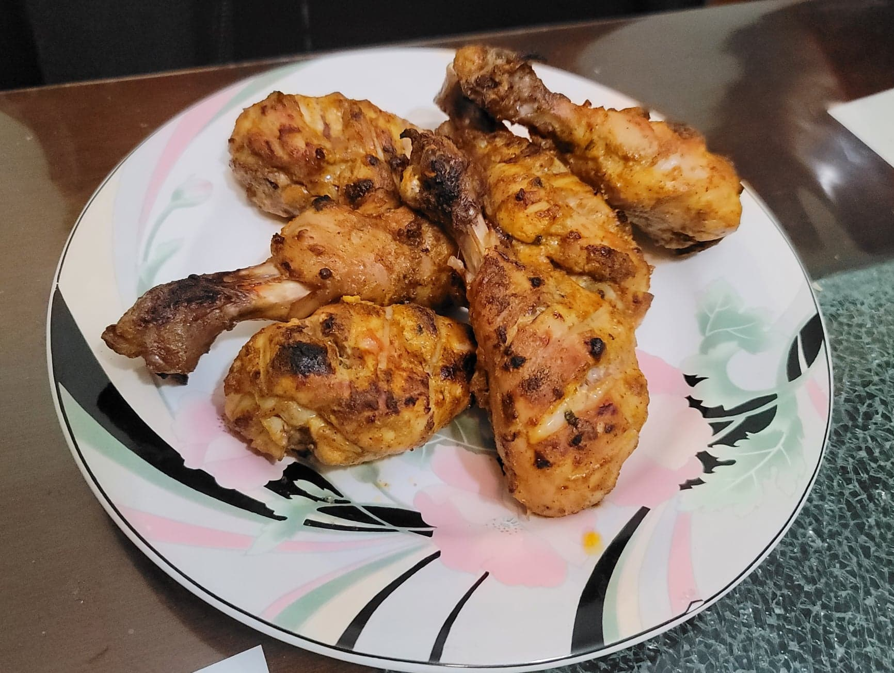

Tandoori Chicken

Ingredients:
- 7-8 Chicken drumsticks, or 4-6 Chicken quarters, skinless
- 1/2 cup Greek yogurt
- 1/2 tbsp Ginger paste, or grated Ginger
- 1/2 tbsp Garlic paste, or grated Garlic
- 1 tsp Kasuri mehti, dried fenugreek leaves
- 1 tsp Garam masala
- 1 tsp Ground coriander
- 1 tsp Kashmiri chili powder
- 1/4 tsp Turmeric
- 1/4 tsp Salt, or to taste
- 1/4 tsp Black pepper
- 1 tbsp Lemon
- 1 1/2 tbsp Mustard oil
Instructions:
- Into a sealable container, combine and mix all the ingredients except for the chicken. Taste and add salt as needed.
- With a knife, add a few large gashes to each piece of chicken, deep enough to reach the bone. Then add in the chicken and massage the marinade into it. Let marinate overnight.
- Preheat an oven to 450 degrees Fahrenheit. Place the chicken, gash side down, onto a roasting rack over a roasting tray lined with aluminum foil. Bake the chicken for 20 minutes and then flip and bake for another 15 minutes. Then turn on your broiler. Transfer the chicken, gash side up, onto a tray to place into the broiler. Broil for 5-7 more minutes. Serve immediately.